Introdução3.1
Neste capítulo, veremos alguns dos aspectos fundamentais dos sinais. Portanto, seremos expostos à conceitos básicos essenciais e explicações qualitativas sobre as razões e os métodos da teoria de sistemas. O objetivo é construir uma base sólida para que você possa compreender a análise que desenvolveremos ao longo do semestre.
Sinais3.1.1
Um sinal é um conjunto de dados ou informações qualquer. Como exemplos práticos, temos um sinal de telefone ou de televisão, o registro de vendas de uma corporação ou os valores de fechamento da bolsa de negócios, como a média do índice IBOVESPA. Em todos esses casos, os sinais são funções de uma variável independente: o tempo.
Entretanto, este nem sempre é o caso. Quando uma carga elétrica é distribuída sobre um corpo, por exemplo, o sinal é a densidade de carga, sendo uma função do espaço em vez do tempo. Embora a discussão teórica se aplique de maneira equivalente a outros tipos de variáveis independentes, neste material trabalharemos quase exclusivamente com sinais que são funções do tempo.
Tamanho do Sinal3.1.2
O tamanho de qualquer entidade é um número que indica a sua largura ou o seu comprimento. De modo geral, a amplitude de um sinal varia com o tempo.
Surge então a seguinte questão: como um sinal que existe em um certo intervalo de tempo, com amplitude variante, pode ser medido por um número que indique o seu tamanho ou a força desse sinal? Tal medida deve considerar não apenas a amplitude do sinal, mas também a sua duração.
Se você quisesse utilizar um único número $V$ como medida do tamanho de um ser humano, deveria considerar não somente seu peso, mas também sua altura.
Se considerarmos que a forma da pessoa é um cilindro cuja variável é o raio $r$ (o qual varia com a altura $h$), então uma possível medida do tamanho de uma pessoa de altura $H$ é o volume $V$ da pessoa.
Matematicamente, essa relação é dada por:
$$ V = \pi \int_{0}^{H} r^2(h) dh $$
Energia do Sinal3.1.3
Seguindo esse raciocínio, poderiamos considerar a área abaixo do sinal $x(t)$ como uma possível medida de seu tamanho, visto que a área engloba tanto a amplitude quanto a duração.
Entretanto, essa abordagem apresenta o problema que, mesmo para um sinal grande $x(t)$, suas áreas positivas e negativas podem se cancelar mutuamente, resultando em um valor pequeno que não reflete a realidade do sinal.
Para corrigir essa dificuldade, definimos o tamanho do sinal como a área sob $x^2(t)$, garantindo que o valor seja sempre positivo. Chamamos essa medida de energia do sinal ($E_x$). Para um sinal real, a definição é dada por:
$$ E_x = \int_{-\infty}^{\infty} x^2(t) dt $$
Essa definição pode ser generalizada para um sinal complexo $x(t)$, assumindo a forma:
$$ E_x = \int_{-\infty}^{\infty} |x(t)|^2 dt $$
Potência do Sinal3.1.4
Para que a energia do sinal seja uma medida significativa do seu tamanho, ela deve ser finita. Uma condição necessária para isso é que a amplitude do sinal tenda a zero ($0$) quando o tempo tende ao infinito ($|t| \rightarrow \infty$). Caso contrário, a integral não convergirá.
Quando a amplitude do sinal $x(t)$ não tende a zero conforme $|t| \rightarrow \infty$, a energia total do sinal torna-se infinita. Nesses casos, uma medida mais apropriada para o tamanho do sinal é a energia média, caso ela exista. A essa medida damos o nome de potência do sinal. Para um sinal real $x(t)$, definimos sua potência $P_x$ como:
$$ P_x = \lim_{T \to \infty} \frac{1}{T} \int_{-T/2}^{T/2} x^2(t) dt $$
Podemos generalizar esta definição para um sinal complexo $x(t)$ através da equação:
$$ P_x = \lim_{T \to \infty} \frac{1}{T} \int_{-T/2}^{T/2} |x(t)|^2 dt $$
Para visualizar a diferença entre esses tipos de sinais, observe a figura abaixo. Em (a), temos um sinal que decai com o tempo (energia finita), enquanto em (b) temos um sinal que oscila indefinidamente (potência finita).
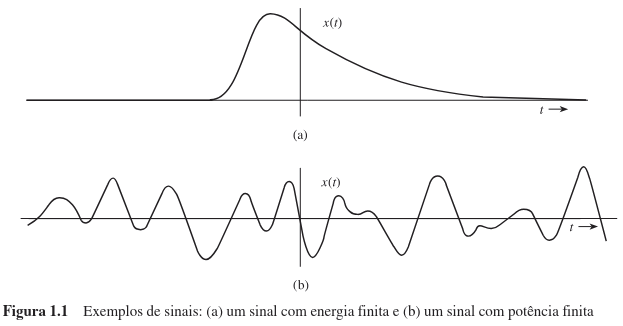
É importante que você note que a potência do sinal $P_x$ representa uma média temporal do quadrado da amplitude do sinal, ou seja, o valor médio quadrático de $x(t)$. De fato, a raiz quadrada de $P_x$ corresponde ao valor rms (root mean square ou raiz média quadrática) de $x(t)$, um conceito com o qual você provavelmente já está familiarizado.
O valor de 127V é o valor eficaz (RMS) do sinal. Isso significa que essa tensão oscilante entrega para uma lâmpada ou resistência a mesma potência média que uma bateria de 127V constantes (DC) entregaria.
De modo geral, a média de uma entidade ao longo de um grande intervalo de tempo (aproximando-se do infinito) existe se a entidade for periódica ou se possuir uma regularidade estatística. Se tal condição não for satisfeita, a média não existirá.
- Um sinal em rampa, definido por $x(t) = t$, aumenta indefinidamente quando $|t| \rightarrow \infty$. Portanto, nem a energia nem a potência existirão para este sinal.
- Por outro lado, a função degrau unitário, embora não seja periódica e não possua regularidade estatística, possui uma potência finita.
Quando lidamos com um sinal $x(t)$ que é periódico, o termo $|x(t)|^2$ também será periódico. Isso simplifica drasticamente o cálculo: a potência de $x(t)$ pode ser obtida calculando a média de $|x(t)|^2$ apenas sobre um período, em vez de tomar o limite no infinito.
Vamos determinar as medidas adequadas para quantificar o tamanho dos sinais apresentados na figura abaixo.
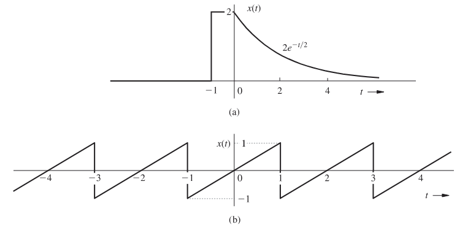
Análise do Sinal (a). Ao observarmos a figura (a), notamos que a amplitude do sinal tende a $0$ quando o tempo $|t|$ tende ao infinito. Conforme estudamos anteriormente, essa característica indica que a medida adequada para esse sinal é a sua energia ($E_x$).
O cálculo é realizado integrando o quadrado do sinal ao longo do tempo:
$$ E_x = \int_{-\infty}^{\infty} x^2(t) dt = \int_{-1}^{0} (2)^2 dt + \int_{0}^{\infty} \left(2e^{-t/2}\right)^2 dt $$
Resolvendo as integrais separadamente:
- A primeira parte (intervalo de -1 a 0) resulta em $4$.
- A segunda parte (intervalo de 0 a $\infty$), que envolve a integração de $4e^{-t}$, também resulta em $4$.
Portanto, a energia total é:
$$ \boxed{E_x = 4 + 4 = 8} $$
Análise do Sinal (b). Na figura (b), o comportamento é diferente: a amplitude do sinal não tende a $0$ quando $|t| \to \infty$. Entretanto, identificamos que ele é periódico e, portanto, sua potência existe.
Para determinar a potência de sinais periódicos, podemos simplificar o uso da equação geral. Como o sinal se repete regularmente a cada período (que neste caso é de 2 segundos), calcular a média em um intervalo infinito é matematicamente idêntico a calcular a média de $x^2(t)$ em um único período.
Aplicando a fórmula da média para o período entre -1 e 1:
$$ P_x = \frac{1}{2} \int_{-1}^{1} x^2(t) dt = \frac{1}{2} \int_{-1}^{1} t^2 dt = \frac{1}{3} $$
Lembre-se de que a potência do sinal corresponde ao quadrado de seu valor rms (raiz média quadrática). Portanto, para este exemplo, o valor rms desse sinal é $1/\sqrt{3}$.
Neste exemplo, vamos determinar a potência e o valor rms para três tipos fundamentais de sinais. Acompanhe o raciocínio matemático detalhado para cada caso. Os sinais analisados serão:
- Sinal Senoidal Simples: $x(t) = C \cos(\omega_0 t + \theta)$
- Soma de Senoides: $x(t) = C_1 \cos(\omega_1 t + \theta_1) + C_2 \cos(\omega_2 t + \theta_2)$, com $\omega_1 \neq \omega_2$
- Exponencial Complexa: $x(t) = D e^{j\omega_0 t}$
(a) Análise do Sinal Senoidal Simples
O sinal $x(t) = C \cos(\omega_0 t + \theta)$ é um sinal periódico com período fundamental $T_0 = 2\pi/\omega_0$. Como a amplitude não decai, a medida adequada para quantificar seu tamanho é a potência.
Embora pudéssemos calcular a média da energia em apenas um período ($T_0$), para fins de demonstração e generalização, resolveremos este problema calculando a média em um intervalo infinitamente grande, utilizando a Equação:
$$ P_x = \lim_{T \to \infty} \frac{1}{T} \int_{-T/2}^{T/2} C^2 \cos^2 (\omega_0 t + \theta) dt $$
Para resolver essa integral, utilizamos a identidade trigonométrica $\cos^2(x) = \frac{1}{2}[1 + \cos(2x)]$:
$$ P_x = \lim_{T \to \infty} \frac{C^2}{2T} \int_{-T/2}^{T/2} [1 + \cos(2\omega_0 t + 2\theta)] dt $$
Podemos separar essa integral em dois termos:
$$ P_x = \lim_{T \to \infty} \frac{C^2}{2T} \int_{-T/2}^{T/2} dt + \lim_{T \to \infty} \frac{C^2}{2T} \int_{-T/2}^{T/2} \cos(2\omega_0 t + 2\theta) dt $$
Vamos analisar cada termo:
- Primeiro termo: A integral de uma constante resulta em $T$. Dividindo por $T$ e multiplicando pela constante externa, obtemos exatamente $C^2/2$.
- Segundo termo: A integral representa a área sob uma senoide em um intervalo muito grande ($T \to \infty$). Devido ao cancelamento das áreas positivas e negativas da oscilação, o valor total dessa integral é limitado (no máximo, a área de meio período). Quando dividimos esse valor limitado por $T$ (que tende ao infinito), o termo todo vai a zero.
Portanto, a potência é dada por:
$$ P_x = \frac{C^2}{2} $$
Consequentemente, o valor rms (raiz média quadrática) é:
$$ \text{Valor rms} = \sqrt{\frac{C^2}{2}} = \frac{C}{\sqrt{2}} $$
Note que uma senoide de amplitude $C$ possui potência igual a $C^2/2$, independentemente do valor de sua frequência $\omega_0$ (desde que $\omega_0 \neq 0$) ou de sua fase $\theta$. Se a frequência fosse zero (sinal constante CC), a potência seria $C^2$.
(b) Análise da Soma de Senoides
Para o sinal $x(t) = C_1 \cos(\omega_1 t + \theta_1) + C_2 \cos(\omega_2 t + \theta_2)$, a periodicidade depende da relação entre as frequências $\omega_1$ e $\omega_2$ (se a razão é um número racional ou não). Como o período pode não ser conhecido ou não existir, calcularemos a potência pela média no infinito:
$$ P_x = \lim_{T \to \infty} \frac{1}{T} \int_{-T/2}^{T/2} [C_1 \cos(\omega_1 t + \theta_1) + C_2 \cos(\omega_2 t + \theta_2)]^2 dt $$
Ao expandir o quadrado $(a+b)^2 = a^2 + b^2 + 2ab$, obtemos três integrais:
- Um termo com $C_1^2 \cos^2(...)$;
- Um termo com $C_2^2 \cos^2(...)$;
- Um termo cruzado com $\frac{2C_1 C_2}{T} \int \cos(\dots)\cos(\dots) dt$.
As duas primeiras integrais resultam nas potências individuais das senoides, que já calculamos no item (a): $C_1^2/2$ e $C_2^2/2$.
O terceiro termo envolve o produto de duas senoides. Trigonometricamente, esse produto pode ser reescrito como a soma de duas novas senoides com frequências $(\omega_1 + \omega_2)$ e $(\omega_1 - \omega_2)$. Usando o mesmo argumento do item anterior, a média temporal dessas oscilações tende a zero (assumindo $\omega_1 \neq \omega_2$).
Logo, a potência total é simplesmente a soma das potências individuais:
$$ P_x = \frac{C_1^2}{2} + \frac{C_2^2}{2} $$
E o valor rms é:
$$ \text{Valor rms} = \sqrt{\frac{C_1^2 + C_2^2}{2}} $$
Podemos estender este resultado para a soma de qualquer número de senoides com frequências distintas. Se $x(t) = \sum_{n=1}^{\infty} C_n \cos(\omega_n t + \theta_n)$, então:
$$P_x = \frac{1}{2} \sum_{n=1}^{\infty} C_n^2$$
Se houver também um componente constante (DC) $C_0$, a fórmula se torna:
$$P_x = C_0^2 + \frac{1}{2} \sum_{n=1}^{\infty} C_n^2$$
(c) Análise da Exponencial Complexa
Neste caso, o sinal é complexo: $x(t) = D e^{j\omega_0 t}$. Devemos calcular a potência, que considera o módulo ao quadrado do sinal:
$$ P_x = \lim_{T \to \infty} \frac{1}{T} \int_{-T/2}^{T/2} |D e^{j\omega_0 t}|^2 dt $$
Lembre-se da propriedade fundamental dos números complexos: $|e^{j\theta}| = 1$. Portanto: $$ |D e^{j\omega_0 t}|^2 = |D|^2 \cdot |e^{j\omega_0 t}|^2 = |D|^2 \cdot 1 = |D|^2 $$
A integral de uma constante $|D|^2$ média resulta na própria constante. Assim:
$$ P_x = |D|^2 $$
E o valor rms é simplesmente $|D|$.
Operações com Sinais3.2
Nesta etapa, discutiremos três operações extremamente úteis que você pode realizar com sinais: deslocamento, escalamento e inversão.
Visto que a variável independente em nossa descrição padrão de sinais é o tempo, denominaremos essas operações tecnicamente como:
- Deslocamento temporal;
- Escalamento temporal;
- Reversão (ou inversão) temporal.
Embora nosso foco principal seja o domínio do tempo, é importante que você saiba que esta discussão é igualmente válida para funções que dependem de outras variáveis independentes, como a frequência ou a distância.
Deslocamento Temporal3.2.1
Vamos começar analisando um sinal $x(t)$ e uma versão desse mesmo sinal que foi atrasada em $T$ segundos, a qual chamaremos de $\phi(t)$.
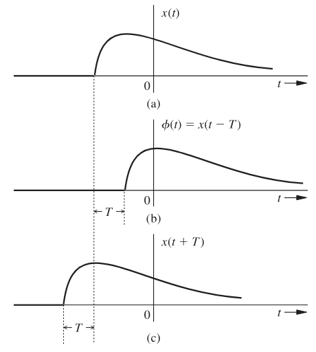
A lógica fundamental aqui é que qualquer evento que ocorra em $x(t)$ em um determinado tempo $t$, acontecerá em $\phi(t)$ $T$ segundos depois, ou seja, no instante $t + T$. Portanto, podemos estabelecer a relação:
$$ \phi(t + T) = x(t) $$
E, consequentemente:
$$ \phi(t) = x(t - T) $$
Em resumo, no deslocamento temporal de um sinal por $T$ segundos, substituímos a variável $t$ por $t - T$. Assim, a expressão $x(t - T)$ representa o sinal $x(t)$ deslocado no tempo por $T$ segundos. Note que:
- Se $T$ for positivo, o deslocamento é para a direita (representando um atraso), conforme ilustrado na letra b da figura.
- Se $T$ for negativo, o deslocamento é para a esquerda (representando um avanço), como visto na letra c da figura.
- $x(t - 2)$ é o sinal $x(t)$ atrasado (deslocado para a direita) em 2 segundos.
- $x(t + 2)$ é o sinal $x(t)$ adiantado (deslocado para a esquerda) em 2 segundos.
Considere a função exponencial $x(t) = e^{-2t}$, ilustrada no item (a) da figura abaixo. O objetivo é traçar e descrever matematicamente essa função quando ela sofre um atraso de 1 segundo e, posteriormente, quando sofre um avanço de 1 segundo.
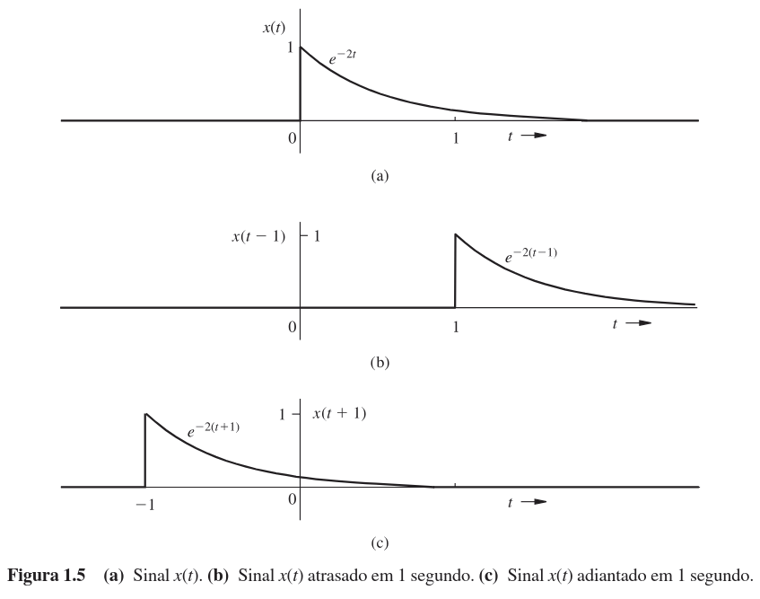
Primeiramente, observe que a função original $x(t)$ é definida matematicamente por partes: ela existe apenas para tempos positivos ($t \ge 0$) e é nula para tempos negativos ($t < 0$).
$$ x(t) = \begin{cases} e^{-2t} & t \ge 0 \\ 0 & t < 0 \end{cases} $$
1. Atraso Temporal (Deslocamento para a Direita)
Seja $x_d(t)$ a representação da função $x(t)$ atrasada em 1 segundo. Graficamente, isso corresponde a deslocar todo o sinal para a direita, como mostrado no item (b) da figura.
Matematicamente, essa função é representada por $x(t - 1)$. Para encontrar sua descrição algébrica, você deve substituir cada ocorrência de $t$ na equação por $(t - 1)$.
Atenção aos Intervalos. A substituição deve ser feita tanto na fórmula da função quanto na condição de existência (o intervalo de tempo).
- Onde tínhamos $t \ge 0$, agora teremos $t - 1 \ge 0$, o que implica $t \ge 1$.
- Onde tínhamos $t < 0$, agora teremos $t - 1 < 0$, o que implica $t < 1$.
Assim, a equação resultante é:
$$ x_d(t) = x(t - 1) = \begin{cases} e^{-2(t-1)} & t \ge 1 \\ 0 & t < 1 \end{cases} $$
2. Avanço Temporal (Deslocamento para a Esquerda)
Agora, seja $x_a(t)$ a representação da função $x(t)$ adiantada em 1 segundo. Graficamente, isso equivale a empurrar o sinal para a esquerda, conforme o item (c) da figura.
Matematicamente, essa função é dada por $x(t + 1)$. Novamente, aplicamos a substituição de $t$ por $(t + 1)$ na equação original:
- A condição $t \ge 0$ transforma-se em $t + 1 \ge 0$, ou seja, $t \ge -1$.
- A condição $t < 0$ transforma-se em $t + 1 < 0$, ou seja, $t < -1$.
Portanto, a descrição matemática final é:
$$ x_a(t) = x(t + 1) = \begin{cases} e^{-2(t+1)} & t \ge -1 \\ 0 & t < -1 \end{cases} $$
Escalonamento Temporal3.2.2
Chamamos de escalamento temporal o processo de compressão ou expansão de um sinal ao longo do tempo. Para compreender esse conceito, considere o sinal $x(t)$ apresentado na figura abaixo (item a).
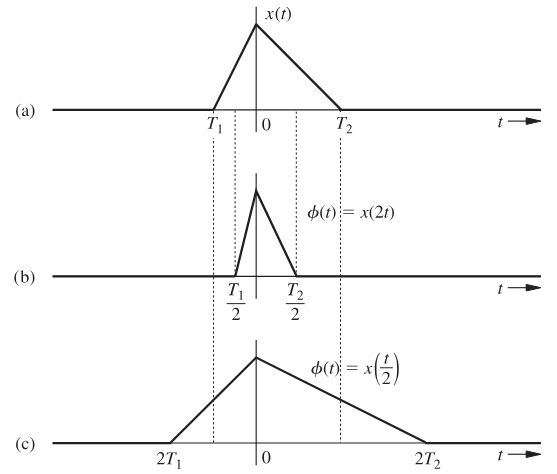
Observe agora o sinal $\phi(t)$ no item (b). Ele representa o sinal $x(t)$ comprimido no tempo por um fator de 2. A lógica aqui é que qualquer evento que ocorra em $x(t)$ em um determinado instante $t$, também deve acontecer em $\phi(t)$, porém no instante $t/2$. Matematicamente, expressamos essa relação como:
$$ \phi\left(\frac{t}{2}\right) = x(t) $$
E, consequentemente:
$$ \phi(t) = x(2t) $$
Note que, como $x(t) = 0$ para $t = T_1$ e $T_2$, você deve ter $\phi(t) = 0$ para $t = T_1/2$ e $T_2/2$, exatamente como ilustrado no item (b) da figura.
Imagine que $x(t)$ foi gravado em um vídeo. Se você reproduzir esse vídeo com o dobro da velocidade de gravação, o resultado será o sinal comprimido $x(2t)$.
De modo geral, se o sinal $x(t)$ for comprimido no tempo por um fator $a$ (onde $a > 1$), o sinal resultante $\phi(t)$ é dado por:
$$ \phi(t) = x(at) $$
Utilizando um argumento similar, você pode demonstrar que quando $x(t)$ é expandido (ou "desacelerado") no tempo por um fator $a$ (onde $a > 1$), temos:
$$ \phi(t) = x\left(\frac{t}{a}\right) $$
O item (c) da figura mostra justamente $x(t/2)$, que é o sinal $x(t)$ expandido no tempo por um fator de 2. É importante que você observe a propriedade fundamental de que, na operação de escalamento no tempo, a origem $t = 0$ é um ponto fixo. Ela permanece inalterada durante a operação, pois para $t = 0$, temos $x(t) = x(at) = 0$.
Neste exemplo, analisaremos o sinal $x(t)$ apresentado no item (a) da figura abaixo. O objetivo é traçar os gráficos e descrever matematicamente o que acontece quando este sinal é comprimido no tempo por um fator de 3 e, posteriormente, quando é expandido no tempo por um fator de 2.
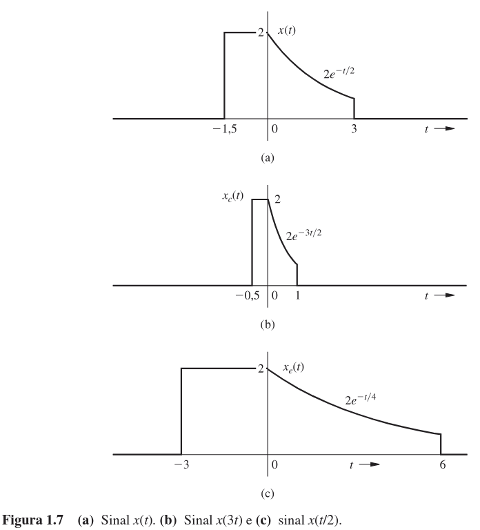
Primeiramente, vamos definir a descrição matemática do sinal original $x(t)$. Observando o gráfico (a), notamos que ele é composto por duas partes distintas dentro do intervalo de interesse e é nulo fora dele:
$$ x(t) = \begin{cases} 2 & -1,5 \le t < 0 \\ 2e^{-t/2} & 0 \le t < 3 \\ 0 & \text{caso contrário} \end{cases} $$
1. Compressão Temporal (Fator 3)
O item (b) da figura mostra $x_c(t)$, que representa o sinal $x(t)$ comprimido no tempo por um fator de 3.
Matematicamente, descrevemos esse novo sinal como $x(3t)$. Para obter sua equação, você deve substituir a variável $t$ por $3t$ no lado direito da Equação (1.14). Essa substituição afeta tanto a função quanto os intervalos de tempo.
Ajuste dos Intervalos. Ao substituir $t$ por $3t$, as desigualdades mudam:
- O intervalo $-1,5 \le t < 0$ torna-se $-1,5 \le 3t < 0$. Dividindo tudo por 3, obtemos $-0,5 \le t < 0$.
- O intervalo $0 \le t < 3$ torna-se $0 \le 3t < 3$. Dividindo tudo por 3, obtemos $0 \le t < 1$.
Além disso, a exponencial $2e^{-t/2}$ passa a ser $2e^{-(3t)/2}$. Logo, a descrição matemática final é:
$$ x_c(t) = x(3t) = \begin{cases} 2 & -0,5 \le t < 0 \\ 2e^{-3t/2} & 0 \le t < 1 \\ 0 & \text{caso contrário} \end{cases} $$
Observe que os instantes originais $t = -1,5$ e $3$ em $x(t)$ correspondem, respectivamente, aos instantes $t = -0,5$ e $1$ no sinal comprimido.
2. Expansão Temporal (Fator 2)
O item (c) da figura mostra $x_e(t)$, que representa o sinal $x(t)$ expandido no tempo por um fator de 2.
Matematicamente, descrevemos esse sinal como $x(t/2)$. O procedimento é análogo: substituímos $t$ por $t/2$ na equação original.
- O intervalo $-1,5 \le t < 0$ torna-se $-1,5 \le t/2 < 0$. Multiplicando por 2, obtemos $-3 \le t < 0$.
- O intervalo $0 \le t < 3$ torna-se $0 \le t/2 < 3$. Multiplicando por 2, obtemos $0 \le t < 6$.
A função exponencial também se altera: $2e^{-t/2}$ torna-se $2e^{-(t/2)/2}$, ou seja, $2e^{-t/4}$. A descrição final é:
$$ x_e(t) = x\left(\frac{t}{2}\right) = \begin{cases} 2 & -3 \le t < 0 \\ 2e^{-t/4} & 0 \le t < 6 \\ 0 & \text{caso contrário} \end{cases} $$
Note que os instantes originais $t = -1,5$ e $3$ em $x(t)$ agora correspondem aos instantes $t = -3$ e $6$ no sinal expandido.
Reversão Temporal3.2.3
Considere o sinal $x(t)$ apresentado na figura abaixo. Você pode visualizar $x(t)$ como uma forma rígida que está presa ao eixo vertical.
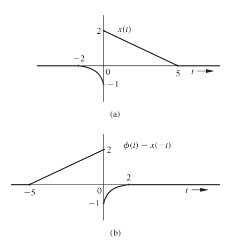
Na operação de reversão temporal de $x(t)$, nós rotacionamos essa forma em $180^\circ$ em relação ao eixo vertical. Essa reversão, que nada mais é do que a reflexão de $x(t)$ pelo eixo vertical, nos fornece o sinal $\phi(t)$, ilustrado na figura.
A lógica fundamental aqui é que o que acontece em um determinado instante $t$, também acontecerá no instante $-t$, e vice-versa. Portanto, temos a relação:
$$ \phi(t) = x(-t) $$
Em resumo, para reverter um sinal no tempo, você deve substituir a variável $t$ por $-t$, resultando no sinal $x(-t)$.
Lembre-se sempre de que a reversão temporal é realizada em relação ao eixo vertical, que funciona como uma âncora ou eixo de referência para a rotação.
Não confunda com a reversão de $x(t)$ em relação ao eixo horizontal (inversão de amplitude), cujo resultado seria $-x(t)$.
Para o sinal $x(t)$ mostrado na figura abaixo (item a), vamos traçar $x(-t)$, que representa a reversão temporal de $x(t)$.
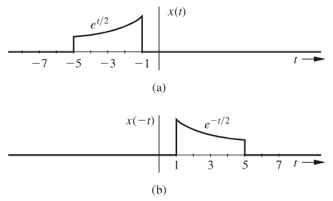
Ao analisarmos o gráfico, você deve notar que os instantes originais $-1$ e $-5$ em $x(t)$ são mapeados, respectivamente, nos instantes $1$ e $5$ em $x(-t)$. O sinal revertido é apresentado no item (b) da figura.
Matematicamente, como a função original segue a lei $x(t) = e^{t/2}$, a função revertida terá o sinal do expoente trocado, resultando em $x(-t) = e^{-t/2}$.
Podemos descrever o sinal original $x(t)$ pela seguinte equação por partes:
$$ x(t) = \begin{cases} e^{t/2} & -1 \ge t > -5 \\ 0 & \text{caso contrário} \end{cases} $$
Para obter a expressão matemática da versão revertida no tempo $x(-t)$, você deve substituir a variável $t$ por $-t$ em toda a definição de $x(t)$, inclusive nos intervalos de tempo.
Lembre-se que ao multiplicar uma desigualdade por $-1$, o sentido do sinal se inverte. Portanto, a condição $-1 \ge -t > -5$ torna-se $1 \le t < 5$.
Logo, a descrição final é:
$$ x(-t) = \begin{cases} e^{-t/2} & 1 \le t < 5 \\ 0 & \text{caso contrário} \end{cases} $$
Operações Combinadas3.2.4
Certas operações complexas exigem que você utilize simultaneamente mais de uma das operações básicas descritas anteriormente. A forma mais geral, que envolve todas as três operações (deslocamento, escalamento e reversão), é representada pela expressão $x(at - b)$.
Para realizar essa operação combinada, você possui duas sequências de passos possíveis. A escolha de qual utilizar é uma questão de preferência, mas é fundamental entender a diferença matemática entre elas para evitar erros.
1. Sequência: Deslocamento $\rightarrow$ Escalamento
Nesta abordagem, você prioriza o termo independente $b$:
- Realize o deslocamento temporal de $x(t)$ por $b$, obtendo o sinal intermediário $x(t - b)$.
- Em seguida, realize o escalamento temporal desse sinal deslocado por um fator $a$. Na prática, isso significa substituir a variável $t$ por $at$.
- O resultado final será $x(at - b)$.
2. Sequência: Escalamento $\rightarrow$ Deslocamento
Nesta abordagem, você prioriza o fator multiplicativo $a$:
- Realize o escalamento temporal de $x(t)$ por $a$, obtendo o sinal intermediário $x(at)$.
- Agora, realize o deslocamento temporal desse sinal escalado. Atenção aqui: o deslocamento não será por $b$, mas sim por $b/a$.
- Matematicamente, você deve substituir $t$ por $(t - b/a)$.
- O resultado será $x[a(t - b/a)]$, que ao distribuir o produto, resulta exatamente em $x(at - b)$.
Em qualquer um dos casos, se o fator $a$ for negativo, a etapa de escalamento no tempo envolverá também uma reversão temporal.
Primeiro método:
Você deve primeiro atrasar $x(t)$ em 6 unidades para obter $x(t - 6)$. Em seguida, deve comprimir esse sinal no tempo por um fator de 2 (substituindo $t$ por $2t$), chegando a $x(2t - 6)$.
Segundo método:
Você deve primeiro comprimir $x(t)$ por um fator de 2 para obter $x(2t)$. Em seguida, deve atrasar esse sinal resultante em 3 unidades (substituindo $t$ por $t - 3$), o que resulta em $x[2(t - 3)] = x(2t - 6)$.
Classificação de Sinais3.3
Existem diversas classes de sinais no universo da teoria de sistemas. No entanto, para mantermos o foco no que é essencial para o escopo deste capítulo, consideraremos apenas as categorias fundamentais.
Ao longo do texto, você explorará as seguintes definições e distinções:
- Sinais contínuos e discretos no tempo;
- Sinais analógicos e digitais;
- Sinais periódicos e não periódicos;
- Sinais de energia e potência;
- Sinais determinísticos e probabilísticos.
Sinais Contínuos e Discretos no Tempo3.3.1
Um sinal que é especificado para valores contínuos de tempo $t$ é denominado sinal contínuo no tempo. Você pode observar a representação gráfica desse tipo de sinal no item (a) da figura abaixo.
Por outro lado, um sinal que é especificado apenas para valores discretos de $t$ é classificado como um sinal discreto no tempo, conforme ilustrado no item (b) da figura.
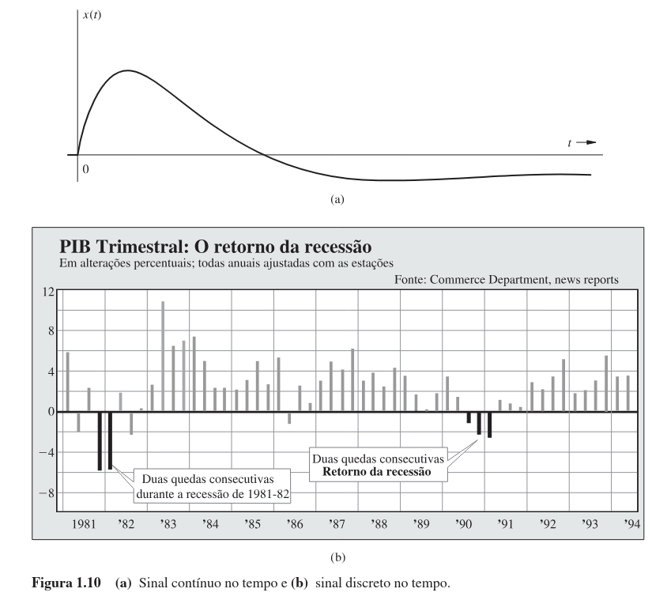
Para facilitar sua compreensão, considere os seguintes exemplos do mundo real:
- A saída de um telefone ou de uma câmera de vídeo é um sinal contínuo no tempo, pois a informação existe a todo instante.
- Já dados como o produto interno bruto (PIB) trimestral, as vendas mensais de uma corporação e as médias diárias do mercado de ações são sinais discretos no tempo, pois são amostrados ou registrados em momentos específicos.
Sinais Analógicos e Digitais3.3.2
É fundamental que você compreenda uma distinção que frequentemente gera confusão: o conceito de tempo contínuo não é sinônimo de analógico, assim como tempo discreto não é sinônimo de digital.
Para clarificar essas definições, devemos observar os eixos do gráfico de um sinal:
- Eixo Horizontal (Tempo): Os termos contínuo no tempo e discreto no tempo qualificam a natureza do sinal ao longo do tempo.
- Eixo Vertical (Amplitude): Os termos analógico e digital qualificam a natureza da amplitude do sinal.
- Sinal Analógico: É aquele cuja amplitude pode assumir qualquer valor dentro de uma faixa contínua. Isso significa que ele pode ter infinitos valores de amplitude.
- Sinal Digital: É aquele cuja amplitude está restrita a um número finito de valores.
Os sinais associados a computadores digitais são classificados como digitais pois assumem apenas dois valores específicos (sinais binários). De forma mais geral, um sinal digital cuja amplitude pode assumir $M$ valores é chamado de sinal M-ário, onde o caso binário ($M = 2$) é apenas uma situação especial.
Para visualizar essas diferenças, observe a figura abaixo, que apresenta exemplos de vários tipos de sinais .
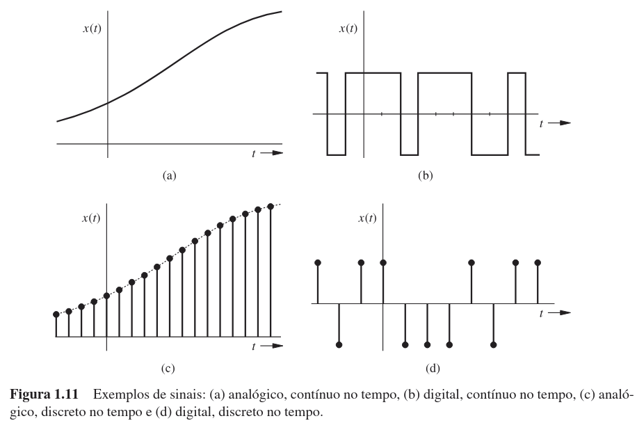
Ao analisar a figura, fica claro que:
- Um sinal analógico não é necessariamente um sinal contínuo no tempo.
- Um sinal digital não é necessariamente um sinal discreto no tempo.
Note especificamente o item (c) da figura, que ilustra um exemplo de sinal analógico discreto no tempo.
Por fim, vale ressaltar que é possível transformar um sinal analógico em um sinal digital, processo conhecido como conversão analógico/digital (A/D). Isso é realizado através da quantização (arredondamento).
Sinais Periódicos e Não Periódicos3.3.3
Dizemos que um sinal $x(t)$ é periódico se, para alguma constante positiva $T_0$, a seguinte condição for satisfeita para todo $t$:
$$ x(t) = x(t + T_0) $$
O menor valor de $T_0$ que satisfaz essa condição de periodicidade é denominado período fundamental de $x(t)$.
Para identificar se um sinal é periódico ou não, observe se ele possui esse padrão de repetição. Se o sinal não possuir um período, ele é classificado como não periódico (ou aperiódico).
Pela definição, um sinal periódico $x(t)$ permanece inalterado quando deslocado no tempo por um período. Por essa razão, um sinal periódico deve obrigatoriamente começar em $t = -\infty$.
Se ele começasse em um instante de tempo finito, digamos $t = 0$, o sinal deslocado $x(t + T_0)$ começaria em $t = -T_0$. Nesse caso, $x(t + T_0)$ não seria idêntico a $x(t)$ na região entre $-T_0$ e $0$. Portanto, um sinal periódico, por definição, estende-se de $-\infty$ a $+\infty$.
Uma propriedade extremamente útil de um sinal periódico $x(t)$ é que ele pode ser gerado pela extensão periódica de qualquer segmento seu que tenha duração $T_0$ (o período).
Basicamente, você pode recortar um pedaço de $x(t)$ com duração de um período e reproduzi-lo indefinidamente para ambos os lados, reconstruindo o sinal completo. A figura abaixo ilustra esse conceito. No item (a), um segmento sombreado começando em $t = -1$ é usado para gerar o sinal; no item (b), um segmento diferente começando em $t = 0$ gera o mesmo sinal.
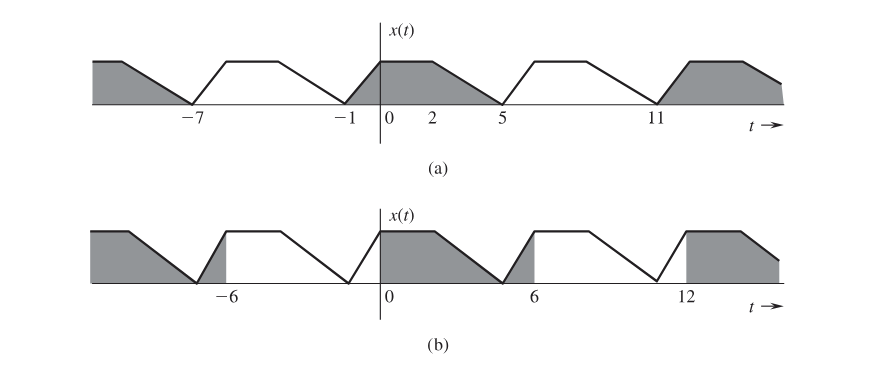
Você pode verificar que essa construção é possível com qualquer segmento de $x(t)$, começando em qualquer instante, desde que a duração do recorte seja exatamente um período. Outra propriedade matemática relevante é que a área abaixo de $x(t)$ em qualquer intervalo de duração $T_0$ é sempre constante. Ou seja, para quaisquer números reais $a$ e $b$:
$$ \int_{a}^{a+T_0} x(t) dt = \int_{b}^{b+T_0} x(t) dt $$
Isso ocorre porque o sinal repete os mesmos valores a cada intervalo $T_0$. Por conveniência, representaremos a área sob $x(t)$ em um período pela notação simplificada $\int_{T_0} x(t) dt$. É útil identificarmos os sinais que começam em $t = -\infty$ e continuam para sempre como sinais de duração infinita. Um sinal periódico é, por definição, um sinal de duração infinita.
Causalidade3.3.3.0.1
Além da periodicidade, podemos classificar os sinais quanto ao seu início no tempo:
Sinal Causal: É um sinal que não começa antes de $t = 0$. Em termos matemáticos, $x(t)$ é causal se: $$ x(t) = 0 \quad \text{para} \quad t < 0 $$
Sinal Não Causal: É um sinal que começa antes de $t = 0$.
- Note que um sinal de duração infinita é sempre não causal.
- Porém, o inverso não é verdadeiro: um sinal não causal não precisa ter duração infinita.
Sinal Anti-causal: É um sinal que é zero para todo $t \ge 0$.
Você pode se perguntar: "Se um sinal de duração infinita verdadeiro não pode ser gerado na prática, por que devemos estudá-lo?"
A resposta está na utilidade matemática. Nos próximos capítulos, veremos que certos modelos ideais (como um impulso ou uma senoide de duração infinita), embora impossíveis de gerar perfeitamente na prática, são ferramentas extremamente poderosas para a análise e o estudo de sinais e sistemas reais.
Sinais de Energia e Potência3.3.4
Um sinal que possui energia finita é classificado como um sinal de energia. Já um sinal que apresenta potência finita (e não nula) é denominado sinal de potência.
Para exemplificar, você pode retomar os sinais da figura abaixo. Nota que eles são exemplos clássicos de sinais de energia e de potência, respectivamente.
É importante que você observe que a potência é, essencialmente, a média temporal da energia. Como essa média é calculada sobre um intervalo de tempo infinitamente grande ($T \to \infty$), ocorre uma dicotomia matemática interessante:
- Um sinal com energia finita possui potência nula.
- Um sinal com potência finita possui energia infinita.
Portanto, um sinal não pode ser classificado simultaneamente como de energia e de potência. Se ele pertence a uma categoria, automaticamente exclui a outra.
Por outro lado, existem sinais que não se encaixam em nenhuma das duas definições (não são nem de energia, nem de potência). O sinal em rampa é um exemplo típico desse caso.
Além disso, devido à sua natureza repetitiva, os sinais periódicos são classificados como sinais de potência (assumindo que a área sob $|x(t)|^2$ em um único período seja finita). Entretanto, fique atento: embora todo sinal periódico seja de potência, nem todo sinal de potência é periódico.
Neste exercício, investigaremos as propriedades de energia e potência para o sinal exponencial de duração infinita definido por:
$$ x(t) = e^{-at}, \quad -\infty < t < \infty $$
A análise será dividida em dois casos, dependendo da natureza do parâmetro $a$: primeiro consideraremos que $a$ é um número real e, em seguida, que $a$ é um número imaginário puro.
(a) Análise para $a$ Real
Para verificar se $x(t)$ é um sinal de energia ou de potência, devemos analisar o comportamento da integral do quadrado do sinal (para energia) e da sua média temporal (para potência).
1. Verificação de Energia ($E_x$)
A energia de um sinal é dada pela integral do seu módulo ao quadrado em todo o tempo:
$$ E_x = \int_{-\infty}^{\infty} |x(t)|^2 dt = \int_{-\infty}^{\infty} (e^{-at})^2 dt = \int_{-\infty}^{\infty} e^{-2at} dt $$
Observe o comportamento da função integranda $e^{-2at}$ quando $a$ é um número real não nulo:
- Se $a > 0$: O termo $-2at$ torna-se positivo e muito grande quando $t$ tende a $-\infty$. Ou seja, o sinal cresce indefinidamente para o passado. Logo, a integral diverge para $\infty$.
- Se $a < 0$: O termo $-2at$ torna-se positivo e muito grande quando $t$ tende a $+\infty$. O sinal cresce indefinidamente para o futuro. A integral também diverge para $\infty$.
Como a integral não converge para um valor finito, $x(t)$ não é um sinal de energia para valores reais de $a$.
2. Verificação de Potência ($P_x$)
A potência média é calculada pelo limite da média da energia em um intervalo $T$:
$$ P_x = \lim_{T \to \infty} \frac{1}{T} \int_{-T/2}^{T/2} e^{-2at} dt $$
Resolvendo a integral definida:
$$ \int_{-T/2}^{T/2} e^{-2at} dt = \left[ \frac{e^{-2at}}{-2a} \right]_{-T/2}^{T/2} = \frac{e^{-aT} - e^{aT}}{-2a} = \frac{e^{aT} - e^{-aT}}{2a} $$
Agora, analisamos o limite dessa expressão dividida por $T$:
- Para qualquer $a \neq 0$, a função exponencial no numerador ($e^{aT}$ ou $e^{-aT}$) cresce muito mais rapidamente do que o denominador linear $T$.
- Matematicamente, pelo Teorema de L'Hôpital ou por análise de crescimento, o limite tende ao infinito ($\infty$).
Como a potência média é infinita, $x(t)$ não é um sinal de potência para valores reais de $a$ (considerando $a \neq 0$).
(b) Análise para $a$ Imaginário
Agora, considere que $a$ é um número imaginário puro. Podemos escrever $a = j\omega_0$, onde $\omega_0$ é um número real. O sinal torna-se:
$$ x(t) = e^{-j\omega_0 t} $$
1. Cálculo da Potência ($P_x$)
Para sinais complexos, utilizamos o módulo ao quadrado $|x(t)|^2$ na integral. Lembre-se da propriedade fundamental das exponenciais complexas: o módulo é sempre unitário.
$$ |x(t)| = |e^{-j\omega_0 t}| = 1 $$
Substituindo isso na definição de potência:
$$ P_x = \lim_{T \to \infty} \frac{1}{T} \int_{-T/2}^{T/2} |x(t)|^2 dt $$
$$ P_x = \lim_{T \to \infty} \frac{1}{T} \int_{-T/2}^{T/2} 1 dt $$
A integral de 1 no intervalo $[-T/2, T/2]$ é simplesmente o comprimento do intervalo, que é $T$.
$$ P_x = \lim_{T \to \infty} \frac{1}{T} (T) = 1 $$
Se $a$ for imaginário, a exponencial de duração infinita é um sinal de potência, e sua potência é $P_x = 1$, independentemente do valor de $\omega_0$ (o valor de $a$).
Sinais Determinísticos e Aleatórios3.3.5
Um sinal cuja descrição física é completamente conhecida, seja na forma matemática ou na forma gráfica, é classificado como um sinal determinístico. Isso significa que, para qualquer instante de tempo que você escolher, é possível determinar o valor exato da amplitude do sinal sem qualquer ambiguidade.
Por outro lado, existem os sinais aleatórios. Estes são sinais cujos valores não podem ser preditos precisamente. Você só consegue caracterizá-los em termos de uma descrição probabilística, utilizando ferramentas estatísticas como o valor médio ou o valor médio quadrático.
É importante destacar que, neste material, trabalharemos exclusivamente com sinais determinísticos. O estudo aprofundado de sinais aleatórios envolve conceitos mais complexos de probabilidade e estatística, estando além do escopo desta etapa do seu aprendizado.
Alguns Modelos Úteis de Sinais3.4
No campo de sinais e sistemas, você verá que as funções degrau, impulso e exponencial desempenham um papel extremamente importante.
Essas funções não servem apenas como a base fundamental para a representação de outros sinais mais complexos; você também poderá utilizá-las para simplificar diversos aspectos na análise de sinais e sistemas.
Função Degrau Unitário $\mu(t)$3.4.1
Em várias de nossas discussões, os sinais começam em $t = 0$, sendo denominados sinais causais. Tais sinais podem ser convenientemente descritos em termos da função degrau unitário $u(t)$, ilustrada no item (a) da figura abaixo.
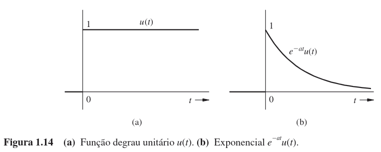
Matematicamente, definimos essa função por:
$$ u(t) = \begin{cases} 1 & t \ge 0 \\ 0 & t < 0 \end{cases} $$
Se você deseja obter um sinal que comece em $t = 0$ (de tal forma que ele possua valor nulo para $t < 0$), precisa apenas multiplicar o sinal original por $u(t)$.
Por exemplo, o sinal $e^{-at}$ representa uma exponencial com duração infinita que começa, teoricamente, em $t = -\infty$. A forma causal desta exponencial, visualizada no item (b) da figura acima, pode ser descrita matematicamente como $e^{-at}u(t)$.
A função degrau unitário é extremamente útil para especificar uma função que possui diferentes descrições matemáticas em diferentes intervalos de tempo.
Você deve lembrar dos exemplos mostrados nas figuras onde as funções possuíam descrições distintas em segmentos de tempo variados. Tais descrições, "por partes", geralmente são trabalhosas e inconvenientes de serem manipuladas matematicamente. O uso da função degrau unitário permite descrever tais funções por meio de uma única expressão válida para todo $t$.
Considere, por exemplo, o pulso retangular mostrado no item (a) da figura a seguir.
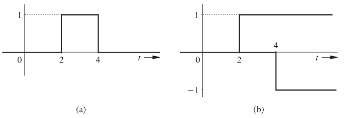
Podemos descrever este pulso em termos de funções degrau se observarmos que o sinal $x(t)$ pode ser decomposto como a combinação de dois degraus unitários atrasados, conforme mostrado no item (b) da figura.
Lembre-se que a função degrau unitário $u(t)$ atrasada em $T$ segundos é representada por $u(t - T)$. A partir da análise visual, é fácil ver que:
$$ x(t) = u(t - 2) - u(t - 4) $$
Neste exemplo, seu objetivo é descrever matematicamente o sinal $x(t)$ apresentado no item (a) da figura abaixo.
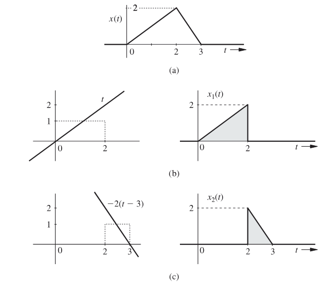
Uma estratégia muito conveniente para você trabalhar com esse tipo de sinal é decompô-lo em duas componentes mais simples, $x_1(t)$ e $x_2(t)$, conforme ilustrado nos itens (b) e (c) da figura, respectivamente.
Desta forma, o sinal total será dado pela soma: $x(t) = x_1(t) + x_2(t)$.
1. Análise da Primeira Componente $x_1(t)$
Observe o sinal $x_1(t)$ na letra (b). Ele se comporta como uma rampa linear $t$ restrita ao intervalo de tempo entre $0$ e $2$.
Para modelar isso matematicamente, multiplicamos a função rampa $t$ por um pulso retangular que "liga" em $t=0$ e "desliga" em $t=2$. Esse pulso é representado pela diferença de degraus $[u(t) - u(t - 2)]$.
Logo, a equação para a primeira parte é:
$$ x_1(t) = t[u(t) - u(t - 2)] $$
2. Análise da Segunda Componente $x_2(t)$
Agora, analise o sinal $x_2(t)$ na letra (c)). Este sinal também é um recorte de uma rampa, mas desta vez ela é decrescente e existe apenas no intervalo entre $2$ e $3$. O pulso que seleciona esse intervalo é $[u(t - 2) - u(t - 3)]$.
Precisamos determinar a equação dessa reta:
- A inclinação é negativa. O sinal varia de $2$ (em $t=2$) até $0$ (em $t=3$), logo a inclinação (derivada) é $-2$.
- A reta cruza o eixo zero em $t=3$. Portanto, podemos descrevê-la como $-2(t - 3)$ (ou $-2t + 6$).
Assim, a expressão para a segunda parte é:
$$ x_2(t) = -2(t - 3)[u(t - 2) - u(t - 3)] $$
3. Combinação e Simplificação
Para obter a expressão final de $x(t)$, somamos as duas componentes encontradas:
$$ x(t) = x_1(t) + x_2(t) $$
$$ x(t) = t[u(t) - u(t - 2)] - 2(t - 3)[u(t - 2) - u(t - 3)] $$
Embora essa equação esteja correta, podemos simplificá-la distribuindo os termos e reagrupando as funções degrau semelhantes:
- Expanda os produtos: $$x(t) = t u(t) - t u(t - 2) - 2(t - 3)u(t - 2) + 2(t - 3)u(t - 3)$$
- Coloque $u(t - 2)$ em evidência: Os coeficientes são $-t$ e $-2(t - 3)$. Somando-os: $$-t - 2t + 6 = -3t + 6 = -3(t - 2)$$
Portanto, a descrição matemática final e simplificada é:
$$ x(t) = t u(t) - 3(t - 2)u(t - 2) + 2(t - 3)u(t - 3) $$
Neste exemplo, o objetivo é descrever o sinal $x(t)$ apresentado na letra (a) através de uma única expressão matemática válida para todo $t$.
Para facilitar, vamos relembrar o formato gráfico desse sinal: ele possui uma parte constante e uma parte exponencial.
1. Análise por Intervalos
Podemos dividir o sinal em duas componentes baseadas nos intervalos de tempo onde ele é diferente de zero:
Intervalo 1 ($-1,5 \le t < 0$): Neste trecho, o sinal é constante com amplitude 2. Para "recortar" esse intervalo usando funções degrau, fazemos o degrau ligar em $t = -1,5$ e desligar em $t = 0$. Matematicamente: $2[u(t + 1,5) - u(t)]$.
Intervalo 2 ($0 \le t < 3$): Neste trecho, o sinal segue a função exponencial $2e^{-t/2}$. Para "recortar" esse intervalo, fazemos o degrau ligar em $t = 0$ e desligar em $t = 3$. Matematicamente: $2e^{-t/2}[u(t) - u(t - 3)]$.
2. Montagem da Expressão Única
A expressão completa é a soma dessas duas componentes:
$$ x(t) = \underbrace{2[u(t + 1,5) - u(t)]}_{\text{Parte constante}} + \underbrace{2e^{-t/2}[u(t) - u(t - 3)]}_{\text{Parte exponencial}} $$
Agora, vamos simplificar a expressão agrupando os termos semelhantes. Observe que temos dois termos multiplicados por $u(t)$ (um vindo da primeira parte e outro da segunda):
Distribuindo os termos: $$x(t) = 2u(t + 1,5) - 2u(t) + 2e^{-t/2}u(t) - 2e^{-t/2}u(t - 3)$$
Colocando $-u(t)$ em evidência nos termos centrais: $$-2u(t) + 2e^{-t/2}u(t) = -2(1 - e^{-t/2})u(t)$$
Portanto, a expressão final simplificada é:
$$ x(t) = 2u(t + 1,5) - 2(1 - e^{-t/2})u(t) - 2e^{-t/2}u(t - 3) $$
Compare esta expressão única com a vista anteriormente. Enquanto a anterior exigia três linhas para definir o sinal (uma para cada intervalo e uma para "caso contrário"), o uso da função degrau $u(t)$ nos permite escrever tudo em uma única linha, o que é muito mais conveniente para operações matemáticas como integração e derivação.
Neste exercício, aplicaremos a propriedade fundamental da multiplicação de uma função por um impulso. Esta propriedade afirma que, quando uma função contínua $\phi(t)$ é multiplicada por um impulso localizado em um instante $T$, o resultado é o valor da própria função naquele instante multiplicado pelo impulso:
$$ \phi(t)\delta(t - T) = \phi(T)\delta(t - T) $$
Para impulsos na origem ($t = 0$), a expressão simplifica-se para:
$$ \phi(t)\delta(t) = \phi(0)\delta(t) $$
Abaixo, resolvemos cada item passo a passo seguindo este princípio.
(a) $(t^3 + 3)\delta(t) = 3\delta(t)$
- Identificação: O impulso $\delta(t)$ está localizado em $t = 0$. A função multiplicada é $\phi(t) = t^3 + 3$.
- Cálculo: Devemos avaliar a função exatamente no instante em que o impulso existe ($t=0$).
- $\phi(0) = (0)^3 + 3 = 3$.
- Resultado: Substituindo o valor na propriedade, temos:
- $(t^3 + 3)\delta(t) = 3\delta(t)$. (Demonstrado)
(b) $[\text{sen}(t^2 - \frac{\pi}{2})]\delta(t) = -\delta(t)$
- Identificação: O impulso $\delta(t)$ está em $t = 0$. A função é $\phi(t) = \text{sen}(t^2 - \frac{\pi}{2})$.
- Cálculo: Avaliamos $\phi(0)$:
- $\phi(0) = \text{sen}(0^2 - \frac{\pi}{2}) = \text{sen}(-\frac{\pi}{2})$.
- Trigonometria: Sabemos que o seno de $-90^\circ$ ($-\frac{\pi}{2}$ radianos) é $-1$.
- $\phi(0) = -1$.
- Resultado:
- $[\text{sen}(t^2 - \frac{\pi}{2})]\delta(t) = -1\delta(t) = -\delta(t)$. (Demonstrado)
(c) $e^{-2t}\delta(t) = \delta(t)$
- Identificação: O impulso $\delta(t)$ está em $t = 0$. A função é $\phi(t) = e^{-2t}$.
- Cálculo: Avaliamos $\phi(0)$:
- $\phi(0) = e^{-2(0)} = e^0$.
- Matemática Básica: Qualquer número (exceto zero) elevado a zero é igual a 1.
- $\phi(0) = 1$.
- Resultado:
- $e^{-2t}\delta(t) = 1\delta(t) = \delta(t)$. (Demonstrado)
(d) $\frac{\omega^2 + 1}{\omega^2 + 9}\delta(\omega - 1) = \frac{1}{5}\delta(\omega - 1)$
- Identificação: Note que a variável aqui é $\omega$. O impulso $\delta(\omega - 1)$ está localizado onde o argumento é zero, ou seja, em $\omega = 1$. A função é $\phi(\omega) = \frac{\omega^2 + 1}{\omega^2 + 9}$.
- Cálculo: Devemos avaliar $\phi(\omega)$ no instante $\omega = 1$:
- $\phi(1) = \frac{1^2 + 1}{1^2 + 9} = \frac{1 + 1}{1 + 9} = \frac{2}{10}$.
- Simplificação: Reduzindo a fração $\frac{2}{10}$, obtemos $\frac{1}{5}$.
- Resultado: Aplicando a generalização da propriedade (Eq. 1.23b):
- $\frac{\omega^2 + 1}{\omega^2 + 9}\delta(\omega - 1) = \frac{1}{5}\delta(\omega - 1)$. (Demonstrado)
Para resolver este exercício, utilizaremos a Propriedade de Amostragem do impulso unitário. Esta propriedade afirma que a integral do produto de uma função $\phi(t)$ por um impulso extrai o valor da função exatamente no instante em que o impulso ocorre:
$$ \int_{-\infty}^{\infty} \phi(t)\delta(t - T) dt = \phi(T) $$
Se o impulso estiver na origem ($T = 0$), a propriedade simplifica-se para:
$$ \int_{-\infty}^{\infty} \phi(t)\delta(t) dt = \phi(0) $$
(a) $\int_{-\infty}^{\infty} \delta(t)e^{-j\omega t} dt = 1$
- Identificação: O impulso $\delta(t)$ está localizado em $t = 0$. A função contínua a ser amostrada é $\phi(t) = e^{-j\omega t}$.
- Cálculo: Aplicamos a propriedade de amostragem substituindo $t$ por $0$ na função $\phi(t)$:
- $\phi(0) = e^{-j\omega(0)} = e^0$.
- Resultado: Como qualquer número (ou exponencial) elevado a zero é igual a 1:
- $\int_{-\infty}^{\infty} \delta(t)e^{-j\omega t} dt = 1$. (Demonstrado)
(b) $\int_{-\infty}^{\infty} \delta(t - 2) \cos \left( \frac{\pi t}{4} \right) dt = 0$
- Identificação: O impulso $\delta(t - 2)$ está localizado em $t = 2$. A função é $\phi(t) = \cos(\frac{\pi t}{4})$.
- Cálculo: Avaliamos a função no ponto de localização do impulso ($t = 2$):
- $\phi(2) = \cos \left( \frac{\pi \cdot 2}{4} \right) = \cos \left( \frac{\pi}{2} \right)$.
- Trigonometria: Sabemos que $\frac{\pi}{2}$ radianos equivale a $90^\circ$, e o cosseno de $90^\circ$ é zero.
- Resultado:
- $\int_{-\infty}^{\infty} \delta(t - 2) \cos \left( \frac{\pi t}{4} \right) dt = 0$. (Demonstrado)
(c) $\int_{-\infty}^{\infty} e^{-2(x-t)}\delta(2 - t) dt = e^{-2(x-2)}$
- Identificação: O impulso $\delta(2 - t)$ ocorre quando seu argumento é zero, ou seja, em $t = 2$. A função em relação à variável de integração $t$ é $\phi(t) = e^{-2(x-t)}$.
- Nota: $x$ é tratado aqui como uma constante em relação à integração em $t$.
- Cálculo: Substituímos $t = 2$ na expressão da função:
- $\phi(2) = e^{-2(x - 2)}$.
- Resultado: Pela propriedade de amostragem, a integral assume exatamente esse valor:
- $\int_{-\infty}^{\infty} e^{-2(x-t)}\delta(2 - t) dt = e^{-2(x-2)}$. (Demonstrado)
A Função Impulso Unitário $\delta(t)$3.4.2
A função impulso unitário $\delta(t)$ é, sem dúvida, uma das ferramentas mais importantes no estudo de sinais e sistemas. Inicialmente definida por P. A. M. Dirac, ela é apresentada matematicamente da seguinte forma:
$$ \delta(t) = 0 \quad \text{para } t \neq 0 $$
$$ \int_{-\infty}^{\infty} \delta(t) dt = 1 $$
Para compreender o que isso significa fisicamente, você pode visualizar um impulso como um pulso retangular extremamente alto e estreito, com uma área unitária (igual a 1). Imagine que a largura desse pulso é um valor $\epsilon$ muito pequeno ($\epsilon \to 0$). Consequentemente, para manter a área igual a 1, sua altura deve ser um valor muito grande $1/\epsilon$ (que tende ao infinito).
Portanto, o impulso unitário pode ser imaginado como um pulso de largura infinitamente pequena e altura infinitamente grande. Como $\delta(t) = 0$ em todo tempo exceto em $t = 0$ (onde é indefinido), representamos graficamente o impulso unitário por uma seta vertical, conforme ilustrado no item (a) da figura abaixo.
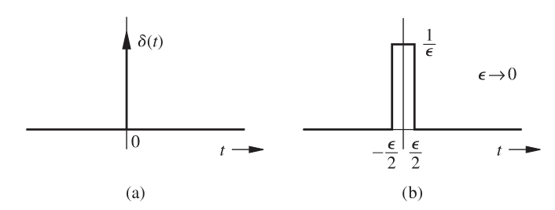
No item (b) da figura acima, você vê a representação do limite do pulso retangular. Contudo, outros formatos de pulsos, como exponencial, triangular ou Gaussiano, também podem ser utilizados para aproximar um impulso.
A característica fundamental da função impulso unitário não é sua forma, mas o fato de que sua duração efetiva tende a zero enquanto sua área permanece unitária.
Observe a figura a seguir. No item (a), temos um pulso exponencial $\alpha e^{-\alpha t} u(t)$. À medida que aumentamos o valor de $\alpha$, o pulso torna-se mais alto e mais estreito. No limite onde $\alpha \to \infty$, a altura tende ao infinito e a duração tende a zero, mas a área sob a curva permanece 1.
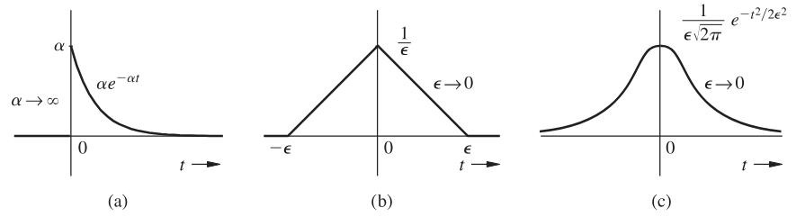
Obviamente, você não consegue gerar uma função impulso perfeita na prática; ela serve como uma idealização matemática que pode ser aproximada.
A partir da definição, sabemos que $k\delta(t) = 0$ para todo $t \neq 0$ e sua área total é $k$. Portanto, representamos um impulso com força (ou área) $k$ graficamente indicando esse valor ao lado da seta.
Multiplicação de uma Função por um Impulso3.4.2.1
Vamos analisar o que acontece quando você multiplica o impulso unitário $\delta(t)$ por uma função $\phi(t)$ que é contínua em $t=0$.
Como o impulso possui valor nulo em qualquer lugar que não seja $t=0$, o único valor de $\phi(t)$ que "sobrevive" à multiplicação é aquele no instante $t=0$, ou seja, $\phi(0)$. Assim, obtemos:
$$ \phi(t)\delta(t) = \phi(0)\delta(t) $$
Isso significa que a multiplicação de uma função contínua $\phi(t)$ por um impulso na origem resulta em um novo impulso, ainda localizado na origem, mas agora com "força" (área) igual a $\phi(0)$.
Podemos generalizar esse conceito para um impulso deslocado no tempo. Se tivermos um impulso $\delta(t - T)$ localizado em $t = T$, a multiplicação selecionará o valor da função nesse instante:
$$ \phi(t)\delta(t - T) = \phi(T)\delta(t - T) $$
Propriedade de Amostragem3.4.2.2
A partir das relações de multiplicação acima, se integrarmos o resultado, chegamos a uma das propriedades mais úteis do impulso. Ao integrar a equação do impulso no intervalo de $-\infty$ a $+\infty$:
$$ \int_{-\infty}^{\infty} \phi(t)\delta(t) dt = \phi(0) \int_{-\infty}^{\infty} \delta(t) dt = \phi(0) $$
Este resultado nos diz que a área sob o produto de uma função com o impulso $\delta(t)$ é igual ao valor da função no instante onde o impulso está localizado. Chamamos isso de propriedade de amostragem do impulso unitário.
De forma análoga, para um impulso deslocado, temos:
$$ \int_{-\infty}^{\infty} \phi(t)\delta(t - T) dt = \phi(T) $$
Neste caso, o impulso "captura" ou "amostra" o valor da função $\phi(t)$ exatamente no instante $t = T$.
Impulso Unitário como Função Generalizada3.4.2.3
A definição clássica de Dirac não é matematicamente rigorosa e pode levar a inconsistências, pois uma função que é zero em quase todos os pontos e infinita em um único ponto não é uma função no sentido ordinário.
Para resolver isso, tratamos o impulso como uma função generalizada. Nessa abordagem, definimos o impulso não pelo seu valor em cada instante, mas pelo seu efeito sobre outras funções (chamadas funções de teste) dentro de uma integral.
Basicamente, definimos o impulso unitário como a entidade que satisfaz a propriedade de amostragem. Desta forma, não precisamos nos preocupar com a "aparência" ou o valor instantâneo do impulso, apenas com como ele atua sob integração.
Aplicação: A Derivada do Degrau Unitário
Uma aplicação interessante dessa definição generalizada surge ao analisarmos a função degrau unitário $u(t)$. No sentido ordinário, a derivada $du/dt$ não existe em $t=0$, pois a função é descontínua ali. No entanto, no sentido generalizado, podemos mostrar que sua derivada é, de fato, o impulso $\delta(t)$.
Para provar isso, vamos calcular a integral de $(du/dt)\phi(t)$ usando integração por partes:
$$ \int_{-\infty}^{\infty} \frac{du}{dt} \phi(t) dt = u(t)\phi(t) \Big|_{-\infty}^{\infty} - \int_{-\infty}^{\infty} u(t)\dot{\phi}(t) dt $$
Sabendo que $u(t)$ é 0 para $t<0$ e 1 para $t>0$, e assumindo que $\phi(t)$ decai para zero no infinito ($\phi(\infty) = 0$), temos:
$$ = \left[ 1 \cdot \phi(\infty) - 0 \right] - \int_{0}^{\infty} \dot{\phi}(t) dt $$ $$ = 0 - \phi(t) \Big|_{0}^{\infty} = -[\phi(\infty) - \phi(0)] = \phi(0) $$
O resultado final é $\phi(0)$. Observe que isso é exatamente o que a propriedade de amostragem do impulso faria. Portanto, concluímos que $du/dt$ comporta-se como $\delta(t)$ no sentido generalizado:
$$ \frac{du}{dt} = \delta(t) $$
Consequentemente, a operação inversa também é válida. A função degrau unitário pode ser obtida integrando a função impulso unitário:
$$ u(t) = \int_{-\infty}^{t} \delta(\tau) d\tau = \begin{cases} 0 & t < 0 \\ 1 & t \ge 0 \end{cases} $$
Esse relacionamento pode ser estendido. Integrando o degrau, obtemos a rampa unitária ($tu(t)$). Integrando a rampa, obtemos a parábola unitária ($t^2/2$), e assim por diante.
Função Exponencial $e^{st}$3.4.3
O sinal exponencial $e^{st}$ é um dos modelos mais fundamentais na engenharia, pois serve como base para descrever uma vasta gama de sinais reais. Diferente da exponencial simples, aqui o expoente $s$ é, em geral, um número complexo.
A variável $s$, conhecida como frequência complexa, é composta por uma parte real e uma parte imaginária:
$$s = \sigma + j\omega $$
Ao substituirmos essa definição na função exponencial e utilizarmos a Fórmula de Euler, obtemos a forma expandida do sinal:
$$e^{st} = e^{(\sigma + j\omega)t} = e^{\sigma t} e^{j\omega t} = e^{\sigma t}(\cos \omega t + j \text{ sen } \omega t)$$
Nesta expressão, podemos identificar o papel de cada componente:
- $\sigma$ (Parte Real): Chamada de frequência neperiana, determina a taxa de crescimento ou decaimento da amplitude.
- $\omega$ (Parte Imaginária): Chamada de frequência angular, determina a taxa de oscilação do sinal.
A função $e^{st}$ é extremamente versátil porque, dependendo dos valores de $\sigma$ e $\omega$, ela se transforma em outros sinais conhecidos:
- Constante ($k$): Ocorre quando $s = 0$.
- Exponencial Monotônica ($e^{\sigma t}$): Ocorre quando a parte imaginária é nula ($\omega = 0$).
- Senóide de Amplitude Constante ($\cos \omega t$): Ocorre quando a parte real é nula ($\sigma = 0$).
- Senóide Amortecida ou Crescente ($e^{\sigma t} \cos \omega t$): Ocorre quando ambos os termos ($\sigma$ e $\omega$) são diferentes de zero.
Para visualizar essas variações, utilizamos o Plano $s$, onde o eixo horizontal representa a parte real ($\sigma$) e o eixo vertical representa a parte imaginária ($j\omega$).
O comportamento do sinal é ditado pela localização de $s$ neste plano:
- Eixo Imaginário ($\sigma = 0$): Resulta em sinais de amplitude constante (senóides puras).
- Semi-plano Esquerdo (SPE, $\sigma < 0$): Resulta em sinais que decaem exponencialmente com o tempo (estáveis).
- Semi-plano Direito (SPD, $\sigma > 0$): Resulta em sinais que crescem exponencialmente com o tempo (instáveis).
Funções Pares e Ímpares3.4.4
No estudo de sinais e sistemas, você encontrará funções que apresentam propriedades específicas de simetria em relação ao eixo vertical. Uma função real $x_e(t)$ é classificada como uma função par de $t$ quando ela satisfaz a seguinte condição matemática:
$$x_e(t) = x_e(-t)$$
Isso significa que uma função par mantém exatamente o mesmo valor para os instantes $t$ e $-t$, independentemente do valor de $t$ escolhido. Visualmente, você notará que $x_e(t)$ é perfeitamente simétrica em relação ao eixo vertical, como pode ser observado na imagem abaixo:
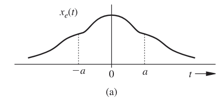
Por outro lado, uma função real $x_o(t)$ é denominada função ímpar de $t$ se ela obedecer à seguinte igualdade:
$$x_o(t) = -x_o(-t)$$
Neste caso, o valor assumido por uma função ímpar no instante $t$ corresponde ao negativo do valor registrado no instante $-t$. Em termos geométricos, dizemos que $x_o(t)$ é anti-simétrica em relação ao eixo vertical, apresentando uma simetria de reflexão em relação à origem, conforme ilustrado no diagrama a seguir:
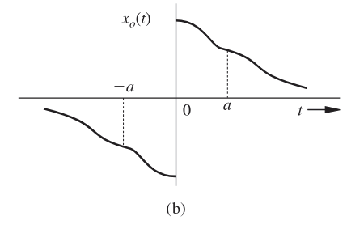
Para identificar rapidamente o tipo de simetria, imagine dobrar o gráfico sobre o eixo vertical. Se as duas metades coincidirem perfeitamente, a função é par. Se for necessário dobrar o gráfico sobre o eixo vertical e, em seguida, sobre o eixo horizontal para que coincidam, a função é ímpar.
Algumas Propriedades de Funções Pares e Ímpares3.4.5
Para que você possa manipular sinais e funções com maior agilidade, é fundamental compreender como elas interagem entre si. As funções pares e ímpares apresentam propriedades multiplicativas específicas, que funcionam de forma análoga à regra de sinais da aritmética:
- Função Par $\times$ Função Ímpar = Função Ímpar
- Função Ímpar $\times$ Função Ímpar = Função Par
- Função Par $\times$ Função Par = Função Par
Estas relações derivam diretamente das definições matemáticas que vimos anteriormente. Compreender esse comportamento ajudará você a simplificar expressões complexas sem a necessidade de cálculos exaustivos em cada etapa.
Análise de Área sob a Curva3.4.5.1
A simetria dessas funções também nos permite extrair conclusões imediatas sobre a integral (ou a área) de um sinal em um intervalo simétrico em relação à origem, ou seja, de $-a$ até $a$.
Observe a figura novamente. Como $x_e(t)$ é simétrica em relação ao eixo vertical, a área acumulada no lado negativo do eixo $t$ é exatamente igual à área no lado positivo.
Portanto, temos:
$$\int_{-a}^{a} x_e(t) dt = 2 \int_{0}^{a} x_e(t) dt$$
Já para a função ímpar, ao analisar a figura acima, você perceberá que a área de um lado do eixo vertical possui o sinal oposto à área do outro lado. Devido a essa anti-simetria, as áreas se anulam perfeitamente:
$$\int_{-a}^{a} x_o(t) dt = 0$$
O domínio dessas propriedades de simetria será uma ferramenta poderosa para você nos próximos tópicos, facilitando a resolução de problemas de análise de sinais e transformadas.
Componentes Pares e Ímpares de um Sinal3.4.6
Um conceito fundamental na análise de sinais é que todo sinal $x(t)$ pode ser decomposto e descrito como a soma de duas partes distintas: uma componente par e uma componente ímpar. Esta relação é expressa pela seguinte equação matemática:
$$x(t) = \underbrace{\frac{x(t) + x(-t)}{2}}_{\text{par}} + \underbrace{\frac{x(t) - x(-t)}{2}}_{\text{ímpar}}$$
Essa decomposição é possível porque a primeira parte da equação satisfaz a condição de simetria das funções pares (substituir $t$ por $-t$ mantém o sinal inalterado), enquanto a segunda parte satisfaz a condição das funções ímpares (a substituição resulta no valor negativo da componente).
Exemplo Prático de Decomposição3.4.6.1
Para ilustrar como essa técnica é aplicada, considere o sinal exponencial causal definido por:
$$x(t) = e^{-at}u(t)$$
Podemos expressar este sinal como a soma de suas componentes $x_e(t)$ (par) e $x_o(t)$ (ímpar). Utilizando a fórmula de decomposição apresentada anteriormente, obtemos os seguintes resultados:
- Componente Par ($x_e$): $$x_e(t) = \frac{e^{-at}u(t) + e^{at}u(-t)}{2}$$
- Componente Ímpar ($x_o$): $$x_o(t) = \frac{e^{-at}u(t) - e^{at}u(-t)}{2}$$
Agora, determine as componentes par e ímpar de $e^{jt}$:
- Sinal original: $x(t) = e^{jt}$.
- Sinal refletido: $x(-t) = e^{-jt}$.
- Componente Par ($x_e$):
- Pela fórmula: $x_e(t) = \frac{1}{2}[e^{jt} + e^{-jt}]$.
- Pela identidade de Euler, sabemos que essa expressão resulta em: $\cos t$.
- Componente Ímpar ($x_o$):
- Pela fórmula: $x_o(t) = \frac{1}{2}[e^{jt} - e^{-jt}]$.
- Novamente, pela identidade de Euler, isso resulta em: $j \operatorname{sen} t$.
Portanto, o sinal pode ser reescrito como a soma de sua parte par e ímpar: $e^{jt} = \cos t + j \operatorname{sen} t$.
Ao final de qualquer decomposição, você pode verificar seu trabalho somando as duas componentes encontradas ($x_e(t) + x_o(t)$). O resultado deve ser sempre igual ao sinal original $x(t)$.